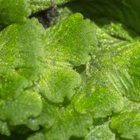

Cyathodiaceae
No widely accepted common name
The Cyathodiaceae is a small, often monogeneric family (containing primarily Cyathodium) of thalloid liverworts in the order Marchantiales. They are distinguished by their often delicate, translucent thalli lacking well-developed air chambers and pores, and typically inhabit shaded, moist environments like cave entrances or stream banks.
Overview
Cyathodiaceae represents a unique lineage within the Marchantiales, often considered closely related to or sometimes even included within Targioniaceae, though differing significantly in morphology and ecology. The family is dominated by the genus Cyathodium, with species found primarily in tropical and subtropical regions worldwide, favouring deeply shaded, humid habitats.
Unlike the robust, drought-tolerant thalli of many other Marchantiales (like Targionia), Cyathodium typically possesses a very thin, delicate, and often translucent thallus. This structure reflects its adaptation to low light and consistently moist conditions. A key feature is the greatly reduced or absent air chambers and pores, setting it apart from typical complex thalloid liverworts.
Reproductively, they possess involucres protecting the archegonia, but these are typically tubular or flask-shaped rather than the bivalved structures seen in Targioniaceae. Some species are noted for emitting a distinct odor when crushed. Their study highlights the diversity of morphological adaptations within the Marchantiales, particularly concerning simplification in response to specific environmental niches.
Quick Facts
- Scientific Name: Cyathodiaceae Stotler & Crand.-Stotl.
- Common Name: (None widely used)
- Number of Genera: Primarily 1 (Cyathodium)
- Number of Species: Approximately 10-15
- Distribution: Pantropical and subtropical, favouring shaded, humid habitats (e.g., cave mouths, wet rocks, stream banks).
- Evolutionary Group: Bryophytes - Liverworts (Marchantiophyta) - Marchantiopsida - Marchantiales
Key Characteristics
Gametophyte (Thallus) Structure
The gametophyte thallus is the dominant life stage and shows considerable adaptation to low-light, high-humidity environments:
- Form: Flattened, often thin and ribbon-like, dichotomously branched, sometimes forming rosettes.
- Texture & Colour: Typically very delicate, translucent, pale to bright green, lacking the leathery texture of many other Marchantiales.
- Internal Structure: Significantly simplified compared to other complex thalloids. Air chambers are usually absent or vestigial, and air pores are absent or extremely rudimentary. The thallus may be only a few cell layers thick in parts.
- Rhizoids: Primarily smooth rhizoids arise from the ventral surface for anchorage. Pegged rhizoids may be absent or rare.
- Ventral Scales: May be present but are often small, inconspicuous, or restricted to the apex.
- Oil Bodies: Present in cells, potentially containing distinctive compounds.
- Scent: Some species (e.g., C. foetidissimum) are known to release a noticeable odor when damaged.
Reproductive Structures
Species are typically monoicous or dioicous.
- Antheridia: Male organs are often located in dorsal cushions or papillae (androecia), sometimes sunken within the thallus.
- Archegonia: Female organs are enclosed within involucres. Unlike the bivalved structure in Targionia, the involucre in Cyathodium is typically tubular, flask-shaped, or cup-like, often located dorsally or terminally on short branches.
Sporophyte
The sporophyte develops within the involucre and is relatively simple:
- Foot: Anchors the sporophyte and absorbs nutrients.
- Seta: Generally very short or absent.
- Capsule: Globose, typically dark. Capsule dehiscence (splitting open) can vary, sometimes occurring irregularly or via a distinct operculum (lid) in some species.
Spores and Elaters
The capsule contains spores and elaters for dispersal.
- Spores: Variable in size and ornamentation, often useful for species-level identification.
- Elaters: Present, aiding in spore release through hygroscopic movements.
Field Identification
Identifying Cyathodiaceae, primarily the genus Cyathodium, relies on recognizing its delicate thallus structure and specific habitat preferences.
Primary Identification Features
- Thallus Texture & Appearance: Very thin, delicate, often translucent, pale or bright green thallus. Lacks the robust, leathery feel of Targionia or Marchantia.
- Habitat: Found in deeply shaded, consistently moist or humid environments like cave entrances, dripping rock faces, shaded soil banks near water, or bases of trees in rainforests. Rarely found in exposed, sunny locations.
- Lack of Obvious Pores/Chambers: Dorsal surface appears smooth, without the visible pores and underlying chamber network typical of most complex thalloids (may need hand lens to confirm).
- Involucre Shape: If present, involucres are tubular, flask-shaped, or cup-like, not dark and bivalved like Targionia.
Secondary Identification Features
- Scent: Some species have a distinctive smell when crushed.
- Ventral Scales: Often inconspicuous or absent.
- Rhizoids: Predominantly smooth rhizoids.
Seasonal Identification Tips
- Year-round (in suitable habitats): As they occupy consistently moist habitats, distinct seasonal changes might be less pronounced than in drought-adapted species. Growth and reproduction may occur whenever conditions are favourable.
- Look during wetter periods: Thalli will be most turgid and reproductive structures potentially more visible during rainy seasons or in perennially wet spots.
Common Confusion Points
Cyathodium might be confused with:
- Simple thalloid liverworts (Metzgeriales, Pelliales): Some simple thalloids (e.g., certain Riccardia, Pellia) can have thin, translucent thalli. However, Cyathodium belongs to Marchantiales and possesses (albeit reduced) features like ventral scales (sometimes) and distinct involucres characteristic of the order. Microscopic examination of internal structure or reproductive features is often needed for confirmation.
- Juvenile stages of other complex thalloids: Young plants of other families might appear simpler, but usually develop characteristic pores/chambers as they mature.
- Filmy Fern Gametophytes (Hymenophyllaceae): These can also be thin, green, and ribbon-like, growing in similar habitats. Fern gametophytes, however, will eventually produce a recognizable fern sporophyte (leaf) and have different cellular structures and reproductive organs (antheridia/archegonia look different).
Key differentiator: The combination of a delicate, translucent thallus lacking obvious pores/chambers, growing in deep shade/high humidity, and possessing Marchantialean reproductive structures (especially the tubular/flask-shaped involucre) points towards Cyathodium.
Field Guide Quick Reference
Look For:
- Delicate, thin, translucent thallus
- Deep shade, high humidity habitat
- Smooth dorsal surface (no obvious pores)
- Tubular or flask-shaped involucre (if fertile)
- Pale to bright green color
Key Distinctions:
- Not leathery/robust (unlike Targionia, Marchantia)
- No obvious air pores/chambers
- Not typically in sunny/dry spots
- Involucre not dark and bivalved
Notable Examples
The family primarily consists of species within the genus Cyathodium.

Cyathodium foetidissimum
(Stink-horn Liverwort - rare usage)
Known for its relatively strong, unpleasant odor when crushed. It has a very delicate, pale green thallus and is often found in deeply shaded, moist places like cave entrances or under overhangs in tropical regions. The specific epithet 'foetidissimum' means 'most foul-smelling'.

Cyathodium cavernarum
(Cave Liverwort - descriptive)
As the name suggests, this species is frequently found at the mouths of caves or in similar deeply shaded, constantly humid rock shelters. It forms pale green, translucent patches. Its morphology is highly adapted to very low light conditions.

Cyathodium aureonitens
(Golden Liverwort - descriptive)
This species is sometimes noted for a slightly yellowish or golden-green hue ('aureonitens' means 'golden-shining'). Like other members of the genus, it prefers shaded, moist habitats and possesses a delicate thallus structure.
Phylogeny and Classification
The phylogenetic placement of Cyathodiaceae (or just the genus Cyathodium) within the Marchantiales has been debated. Molecular studies generally place it within the order, often showing a close relationship with Targioniaceae. Some classifications treat it as a distinct family, while others have submerged it within Targioniaceae due to molecular proximity, despite the significant morphological differences.
The morphological simplification (loss of complex air chambers/pores) is considered a derived condition, likely an adaptation to stable, low-light, high-humidity environments where complex water regulation structures are less critical. This makes Cyathodiaceae an interesting case study in evolutionary reduction.
Position in Plant Phylogeny
- Kingdom: Plantae
- Division: Marchantiophyta (Liverworts)
- Class: Marchantiopsida
- Order: Marchantiales
- Family: Cyathodiaceae (or sometimes included within Targioniaceae)
Evolutionary Significance
Cyathodiaceae provides insights into:
- Morphological Reduction: Demonstrates how complex structures (like air chambers/pores) can be secondarily lost or reduced in response to specific, stable environmental conditions (low light, high humidity).
- Niche Specialization: Highlights adaptation to extreme shade and moisture regimes, contrasting with the desiccation tolerance seen in related families like Targioniaceae.
- Phylogenetic Relationships: Its placement near Targioniaceae despite morphological divergence underscores the importance of molecular data in resolving evolutionary relationships.